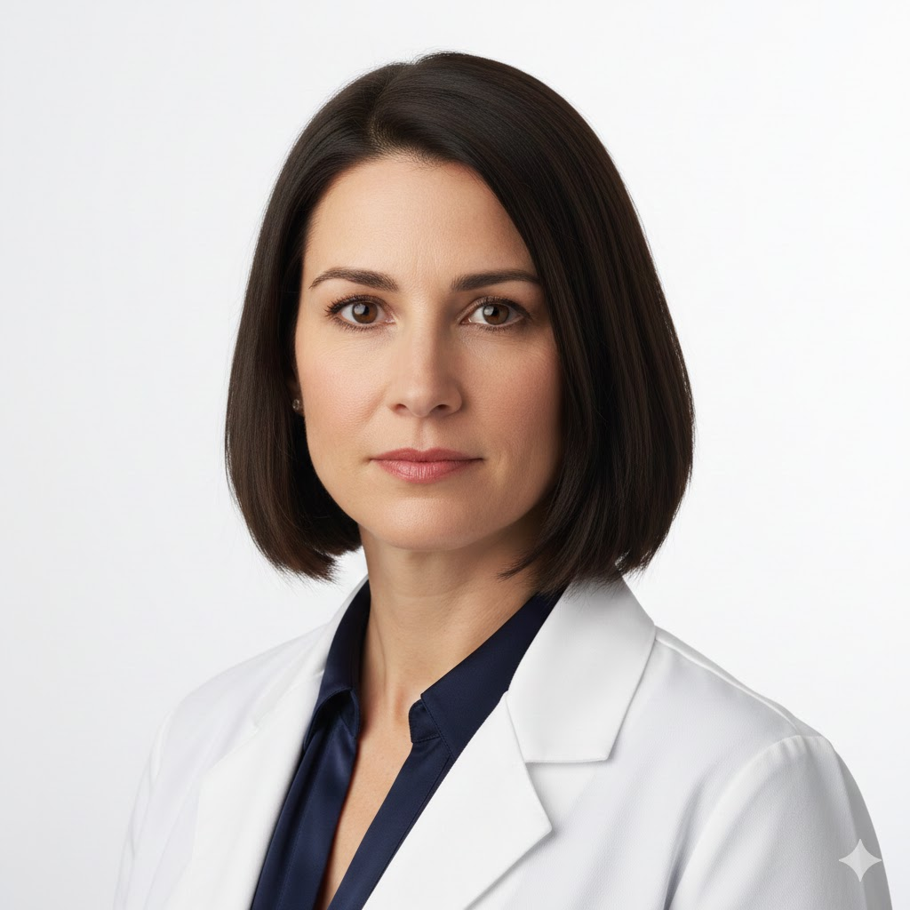

Rreth Dr. Liridona Berisha
Dr. Liridona Berisha është neurologjiste me fokus në sëmundjet neuromuskulare dhe rehabilitimin pas incidenteve neurologjike. Ka përfunduar specializimin në Francë dhe është një oratore e njohur në konferenca ndërkombëtare.
Specializimi
- Sëmundjet neuromuskulare
- Rehabilitimi neurologjik
- Scleroza multiple
- Parkinson dhe sëmundje lëvizëse
- Neurooftalmologji
Përvoja
15 vjet përvojë klinike, duke punuar me pacientë me sëmundje komplekse neuromuskulare. Eksperte në menaxhimin e sclerozës multiple.
Kontakt
Orari: E Mërkurë - E Shtunë, 10:00 - 18:00
Termini: Rezervo nëpërmjet faqes së kontaktit